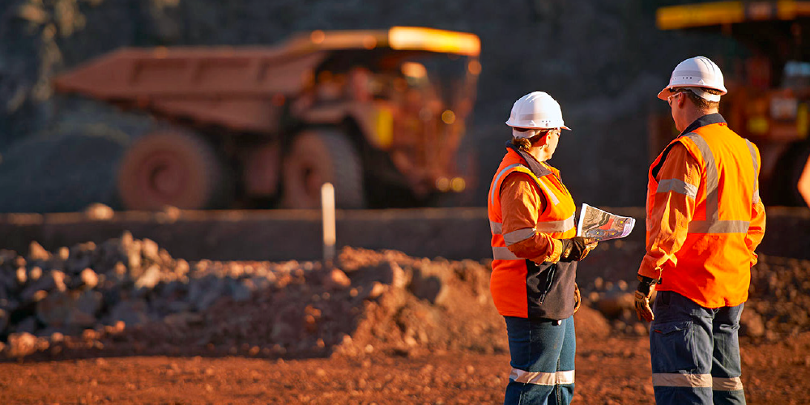

Étudiant | DUT | Géométallurgie et Géotechnique Minière
Chers lecteurs,
Bonjour ! Je suis Mohamed Oujbih, un étudiant de 21 ans poursuivant actuellement un diplôme en géométallurgie et géotechnique minière à l'École Supérieure de Technologie. Avec un baccalauréat en sciences physiques, je suis passionné par l'intersection de la technologie et des sciences de la Terre, visant à comprendre et optimiser l'extraction des ressources précieuses de la terre.
CSS, Kotlin, Java, Python, JavaScript
J'ai un bon niveau de maîtrise du français et de l'anglais.
Je suis enthousiaste à l'idée de rester informé sur les dernières avancées dans le domaine de l'exploitation minière et de la géotechnique. De plus, je suis ouvert aux opportunités de collaboration, de stages et de projets en accord avec mes intérêts académiques et professionnels.
Programme de Géométallurgie et Géotechnique Minière
+212614374154